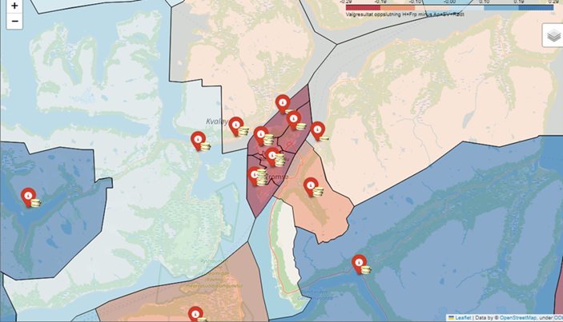

4: Virkninger uten markedspris og usikkerhet
SOK-2301 - Nytte-kostnadsanalyse i teori og praksis
Oversikt over ulike verdsettingsmetoder for prissetting:
| Tilnærming | Type verdi | Vanligste verdsettingsmetoder | |
|---|---|---|---|
| Faktisk marked | Markedsbasert | Bruksverdi | Markedspriser, kostnader ved avbøtende tiltak, kostnader ved å erstatte tapte miljøgoder |
| Parallelle markeder | Avslørte preferanser | Bruksverdi | Hedonisk prising (eiendomspriser, lønninger), reisekostnadsmetoden |
| Hypotetiske markeder | Uttrykte preferanser | Bruksverdi og ikke-bruksverdi | Betinget verdsetting, valgeksperimenter |
Markedsbasert
- Den foretrukkene metoden
- Markedspriser er ofte ikke tilgjengelig
Metoder basert på avslørte preferanser
- Forholdsvis pålitelig
- Begrenset bruksområde
- Mest egnet til bruksverdi
- Bør suppleres med uttryket preferanser
Metode for uttrykte preferanser
- Kan anvendes på alle typer goder
- Folk vil ofte ikke oppgi korrekte svar på hypotetiske valg
Bruk av fageksperter for å verdsette virkninger
- Bedre til å vurdere sannsynligheter
- Samme metoder for å avdekke preferanser kan brukes på eksperter
- Ekspertvurdering vil ikke alltid samsvare med publikums egne preferanser
- Brukes til å lage scenarioer for betinget verdsetting og valgeksperimenter
Miljøvirkninger

Miljøverdi
- Miljøverdi kan være vanskelig å verdsette, spesielt ikke-bruksverdi
- Respondenter har ikke erfaring med å velge tilgangen eller kvalitet
- Verdioverføringer fra tidligere gjennomførte studier
- forutsetter høy kvalitet på underliggende verdsettingsstudier
Kostnadsbasert verdsettelse
- Beregne hva det vil koste å unngå eller avbøte tapet av et miljøgode
- F.eks. støyisolering
Vurdering av usikkerhet kan grovt sett bestå av disse fire stegene:
- kartlegg usikkerhetsfaktorene
- klassifiser usikkerhetsfaktorene
- gjennomfør usikkerhetsanalyse
- vurder risikoreduserende tiltak
Husk at usikkerhet allerede kan ha blitt tatt høyde for
- Tiltak med høy risiko eller umoden teknologi kan ha blitt forkastet når relevante tiltak ble valg ut i arbeidsfase 2
- Forventningsverdien tar hensyn til ulike sannsynligheter for ulike utfall
- Kalkulasjonsrenten tar hensyn til risiko
Ulike typer av usikkerhet
- Tiltaks- og prosjektinterne forhold:
- Usikkerhet knyttet til gjennomføringen og prosjektering.
- Hendelsesusikkerhet:
- Uforutsette hendelser for dette prosjektet (“usystematisk risiko”)
- Generell usikkerhet:
- Generell risiko (“markedsrisiko”)
Ulike typer usikkerhetsanalyse
- Følsomhetsanalyser
| Pessimistisk verdi | Forventet verdi | Optimistisk verdi | |
|---|---|---|---|
| Forventet investeringskostnad (mill. kr) | 300 | 125 | 50 |
| Netto nåverdi (mill. kr) | -47 | 128 | 203 |
Mer avanserte usikkerhetsanalyser
- scenarioanalyser
- Utvidelse av følsomhetsanalyse
- Flere parameter endres samtidig
- simuleringer
- Monte Carlo
Monte Carlo
Risikoreduserende tiltak
- forebygge avvik fra forventningsverdien
- planlegge for å begrense konsekvensene av avvik eller uheldige hendelser
Realopsjoner
- Det er betydelige (irreversible) kostnader forbundet med å komme tilbake til utgangspunktet
- Det er sannsynlig at man senere får ny informasjon som gir god støtte i beslutningsprosessen.
- Det er handlingsrom når man på et senere tidspunkt skal ta en ny beslutning om tiltak.
Forskjellige typer realopsjoner
- Utsatt beslutning
- Trinnvis utbygging
- Innbygd fleksibilitet
- Avslutning av tiltak
Fordelingsvirkninger
- Skal ikke foretas fordelingsvekting i selve nåverdianalysen
- Tas med i tilleggsanalyse
- Der det er relevant skal det gis tilleggsinformasjon om fordelingsvirkninger
- Økt sysselsetting i én region på bekostning av færre sysselsatte i en annen, er en fordelingsvirkning - ikke en ringvirkning
- Nyttig for beslutningstaker
- Fordeling kan av og til være hovedformålet med tiltaket
- En kan da for eksempel sammenligne NV til ulike alternative måter å oppnå en bestemt fordeling
- Vurder om det finnes kompenserende alternativer
Hvilke fordelingsvirkninger er relevante?
- geografiske regioner i Norge
- offentlige virksomheter
- privat næringsliv
- privatpersoner
- brukere og ikke-brukere av et offentlig tiltak
Hvilke fordelingsvirkninger er relevante?
- sosioøkonomiske grupper, inndelt etter for eksempel
- inntektsnivå
- sivil status
- alder
- barnefamilier
- funksjonsevne
- sykdomsgruppe
- yrkesgrupper
- forskjellige generasjoner
- kjønn
Eksempel på fordelingsanalyse:
- Tiltak forventes å gi et samfunnsøkonomisk overskudd på 250 mill.
- Deler inn i fem inntektsgrupper.
| Kvintil (inntekt) | Beregnet overskudd ved tiltaket |
|---|---|
| 1. kvintil (lavest) | –45 000 000 |
| 2. kvintil | –60 000 000 |
| 3. kvintil | 20 000 000 |
| 4. kvintil | 150 000 000 |
| 5. kvintil (høyest) | 185 000 000 |
| Summert over alle grupper | 250 000 000 |
Gegografisk fordeling
Kart
Oppgave:
Se på rapporten du har
- Finn ett eksempel på verdivurderinger i rapporten der det ikke finnes noe faktisk marked
- Om du ikke finner noen, finnes det verdier rapporten ikke tar med, som den potensielt kunne anslått?
- Hvilken metode har forfatterne brukt på å finne verdien?
- Hvordan er usikkerhet tatt hensyn til?